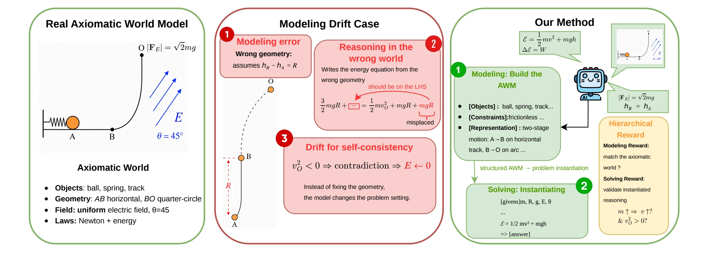
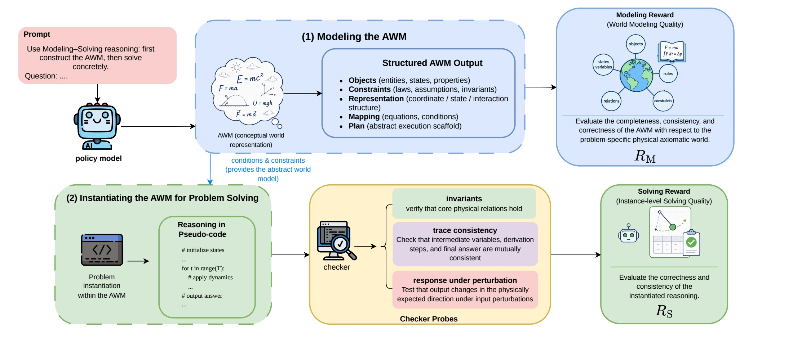

Outcome rewards · RLVR
Check only the final answer. A correct answer reached from a wrong world still earns full reward.
NeurIPS 2026
1Northwestern University 2Department of Physics, University of Florida 3Computer & Information Science and Engineering, University of Florida †Corresponding authors
In its own world, the ball never reaches O.
Same givens, same laws, followed faithfully.
Same problem. Two worlds.
The model reasons coherently inside a wrong physics world.
A smooth horizontal track \(AB\) joins, at \(B\), a smooth quarter-circle rail \(BO\) of radius \(R\) in a vertical plane. A positively charged ball of mass \(m\) is released from rest at \(A\), where it compresses a light spring, and reaches \(B\) with speed \(\sqrt{gR}\). It moves along \(BO\) and leaves the rail at \(O\) moving vertically upward. In the region \(x \ge -R\) a uniform electric field points at \(45^\circ\) to the \(x\)-axis, and the electric force on the ball has magnitude \(\sqrt{2}\,mg\).
Find (1) the elastic energy stored in the spring at \(A\), (2) the speed at \(O\), and (3) the trajectory after \(O\). Answers: \(E_p = \tfrac12 mgR\), \(v_O = \sqrt{3gR}\), \(y^2 = 6Rx\).
TL;DR Language models often fail physics because they reason inside the wrong physical world. RLAWM trains a model to build the right world and to reason inside it, by probing its hidden belief from two sides during reinforcement learning. Nothing extra runs at inference.
1 · Motivation
Research-level physics benchmarks show a recurring pattern. Models silently change a given, invent a law, or add an assumption that turns a hard problem into a familiar one, and then reason flawlessly inside that corrupted world. We call this modeling drift.
Wrong geometry: the model assumes \(h_B - h_A = R\), although the problem says \(AB\) is horizontal.
It writes the energy equation from that geometry and obtains the impossible \(v_O^2 < 0\).
Instead of fixing the geometry, it rewrites the problem and declares \(E \leftarrow 0\).
Modeling drift is the divergence between a model’s inferred axiomatic world model (AWM) and the true physical world specified in the problem. Unlike factual hallucination, it happens at the level of premises: the model reasons coherently inside a wrong physics world.

Paper Figure 1 · click to enlargeOutcome rewards · RLVR
Check only the final answer. A correct answer reached from a wrong world still earns full reward.
Step-level rewards · PRMs, LLM judges, rubrics
Score whether each step looks plausible or locally correct, relative to the premises the model has already adopted.
What none of them checks
Whether the model is reasoning in the right world at all. RLAWM rewards that world directly.
The opening
In physics, verifying a claim is easier than deriving it: checking a conservation law or a scaling relation is straightforward. But a reasoning trace is static text. It can be read, not probed.
Our idea
Turn the model’s belief into something that can be compared with the true world and executed inside it. Every probe becomes a training signal on the belief itself.
2 · Method
The axiomatic world model is the policy’s belief about a problem’s physical setup. It lives in weights and hidden states, so no reward can read or edit it directly. RLAWM reaches it from two sides, and trains on what it finds: first learn the right world, then learn to reason inside it.
Stage I · passive probe
The policy writes its world down as a structured [modeling] block. We read it and compare it, motif by motif, with the problem’s true axiom set.
→ modeling reward \(R_M\): is this the right world?
Stage II · active probe
The policy’s reasoning is compiled into a program and dropped into an executable model of the true world, built in code for each problem. We run it, perturb it, and check it against physical law.
→ solving reward \(R_S\): does it reason correctly in that world?
Stage I · modeling reward \(R_M\)
Before solving, the policy writes the world it believes in as a [modeling] block with five fields. Hover a field to see what it pins down. Switch to the drifted belief of Figure 1: the error is now visible in writing, where a reward can reach it.
Blocks are illustrative, written in the paper’s schema (Appendix H) for the problem above. The drifted block is reconstructed from Figure 1.
Physics Modeling Fidelity never asks an LLM to judge physics. A frozen LLM only extracts tuples from both blocks under one schema; a deterministic rule matches them and computes F1. Three motif types catch different failures, and \(R_M = \tfrac13\,(\mathrm{F1}_{\text{QEL}} + \mathrm{F1}_{\text{VCL}} + \mathrm{F1}_{\text{AEB}})\).
Motif sets are illustrative, in the PMF schema of Appendices I–J. The expected effect of each error type follows Table 13 of the paper.
Stage II · solving reward \(R_S\)
For every training problem, a checker is synthesized once, before training, and then frozen. It binds the problem’s entities to a shared library of 147 reusable physics-law templates. The templates hold general laws and their applicability conditions, not answers.
Problem entities
Template library 147 laws extracted from PhysReason solutions · examples
PhysicsChecker generated for this problem
The policy writes its derivation as pseudocode. A frozen translator (Qwen2.5-Coder-1.5B) compiles it into a program; if the program does not run, \(R_S = 0\). The checker then runs it and fires three kinds of probes. Pick a rollout from Appendix E and watch.
Both rollouts state the same premises; only one carries them through.
Do the core physical relations hold?
Do its own quantities agree with each other?
Change an input, re-run the same program: does it respond like the true world?
Extra probe for illustration: the checker of Appendix L perturbs only \(R\), so this one is not scored.
Scores follow the illustrative checker of Appendix L, which has one test per category. Real checkers run 7.34 assertions per rollout on average.
Training · \(R = 0.4R_M + 0.4R_S + 0.2R_A\)
Training is an SFT cold start that teaches the [modeling] / [solving] format, followed by GRPO on the joint reward. GRPO learns only from reward differences inside a group of 8 rollouts. Take a hard problem where every rollout gets the final answer wrong.
The eight rollouts are illustrative. The measured numbers are from Table 4 and Appendix M.
The extractor, translator and checkers exist only during training. Because each checker is built from general law templates, optimizing \(R_S\) does not fit the policy to one checker; it pushes law-abiding execution into the policy itself. At inference the model answers alone, at the cost of ordinary chain-of-thought.
If the laws were internalized rather than the checkers memorized, the gains should persist where no checker ever existed: at large \(k\), on harder problems, on new sources, and even in math. The results test exactly that.
[modeling] block \(\hat m\)
Paper Figure 2 · click to enlarge3 · Results
All methods share the same SFT cold start and GRPO setup; only the reward differs. Baselines: RLVR (final-answer reward), Direct-Likert and Reference-Likert (LLM judges, without and with the reference solution), and Rubrics as Rewards. SubPass@k is the share of sub-questions answered correctly, keeping the best of k samples.
RLAWM has the best Overall score on both datasets for all three backbones.
Best of \(k\) samples on PhysReason.
Trained only on PhysReason. SubPass@1 (%).
4 · Case studies
Three rollouts from the paper. The first shows why both levels are needed; the other two mark where the checker’s judgment ends.
Appendix E · arc-and-field problem
Case 1 · timeline
[representation] type: timeline
S2: B → O normal force does no work;
gravity and electric force both do work
[sub2] W_g + W_E = ½ m v_O² − ½ m v_B²
W_g = −mgR ; W_E = 2mgR
⇒ v_O = √(3gR)
[sub3] a_x = g, a_y = 0 ⇒ y² = 6Rx
Case 2 · interaction_graph
[representation] type: interaction_graph
edges: field → ball: qE = √2 mg at 45°
rail → ball: normal force does no work
[sub2] F_Ey = mg cancels gravity
⇒ kinetic energy from B to O unchanged
⇒ v_O = v_B = √(gR)
[sub3] a_x = g, a_y = 0 ⇒ y² = 2Rx
Both identify gravity, the electric force and the non-working normal force. The declared worlds are nearly the same.
Case 2 drops the work of the horizontal electric force. The work–energy invariant fails: \(\Delta KE = 0 \ne mgR\). Run it in M4 ↑
Case 1: 3/3 sub-answers. Case 2: 1/3 (only \(E_p\)).
Takeaway. Valid premises do not guarantee valid execution, and a self-consistent trajectory (\(y^2 = 2Rx\) follows from its wrong \(v_O\)) is not a correct one. This is why RLAWM rewards both levels.
Appendix M · false negative · three-step gas cycle
Rollout all 3 sub-answers correct
[constraints] first law as dU = Q + W,
W = work done ON the gas
[sub1] W_1 = dU_1 = P_0V_0 (r^(γ−1) − 1)/(γ−1)
[sub2] W_2 = −P_0V_0 (r^γ − r^(γ−1))
Q_2 = dU_2 − W_2
[sub3] η = W_by / Q_2
Checker tests \(R_S = 0.56\)
The checker writes \(\Delta U = Q - W\) with \(W\) the work done by the gas. Every test that reads a work term sees the opposite sign.
Takeaway. The law is the same on both sides; only its written form differs. Tests that fix a convention the law leaves open under-reward valid physics. This motivates convention-invariant tests and adaptive probes.
Appendix M · false positive · series RLC resonance
Rollout sub-answer 3 wrong
[sub3] half power: X = ±R
w_plus = +R/(2L) + √(R²/(4L²) + 1/(LC))
w_minus = −R/(2L) + √(R²/(4L²) + 1/(LC))
dw = w_plus − w_minus → emit dw ✓ (= R/L)
[subans 3] Δω = R/(2L) ✗
Every emitted quantity is correct, including dw. The checker audits emitted values, not the written answer: \(R_S = 1.0\).
The written closed form \(R/(2L)\) is wrong (it should be \(R/L\)). The answer reward catches it.
Takeaway. What a rollout writes after its last emit is invisible to the checker. This is the most common false-positive pattern, and the reason the joint reward keeps \(R_A\).
5 · Conclusion
RLAWM turns the verification–derivation asymmetry of axiomatic domains into a training signal. It rewards the world a model believes in and how it reasons inside that world. The gains hold across backbones, seeds and three kinds of distribution shift, with no checker at inference.
Cite
@inproceedings{yang2026axiomatic,
title = {Axiomatic World Modeling for Physics Reasoning},
author = {Yang, Xinye and Liu, Zhenyang and Wang, Yuxuan and Lei, Yuanyuan},
booktitle = {The Fortieth Annual Conference on Neural Information Processing Systems},
year = {2026}
}